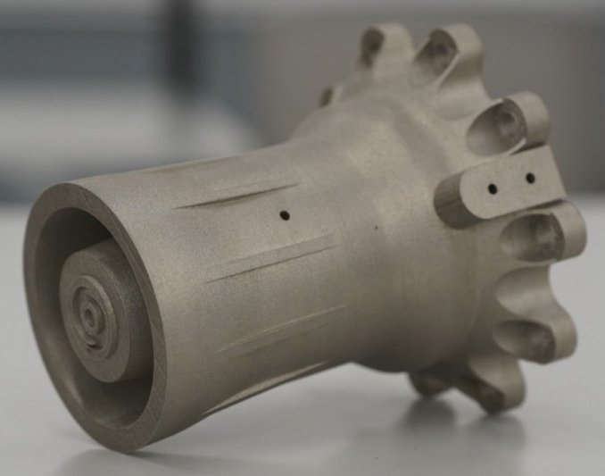

Propulsion / Research, 2025–Present
Rotating Detonation Rocket Engine
Co-founded Project Wavefront, a 501(c)(3) building a methane/oxygen RDRE, now hot fired ~100 times.
- 100
- Tests in Nov 2026
- 10 sec
- Max burn time
- 13.5 kHz
- Wave frequency
- Methagox
- Fuel/Oxidizer
Photo: the Mark I demonstrator as printed
Read the full project →